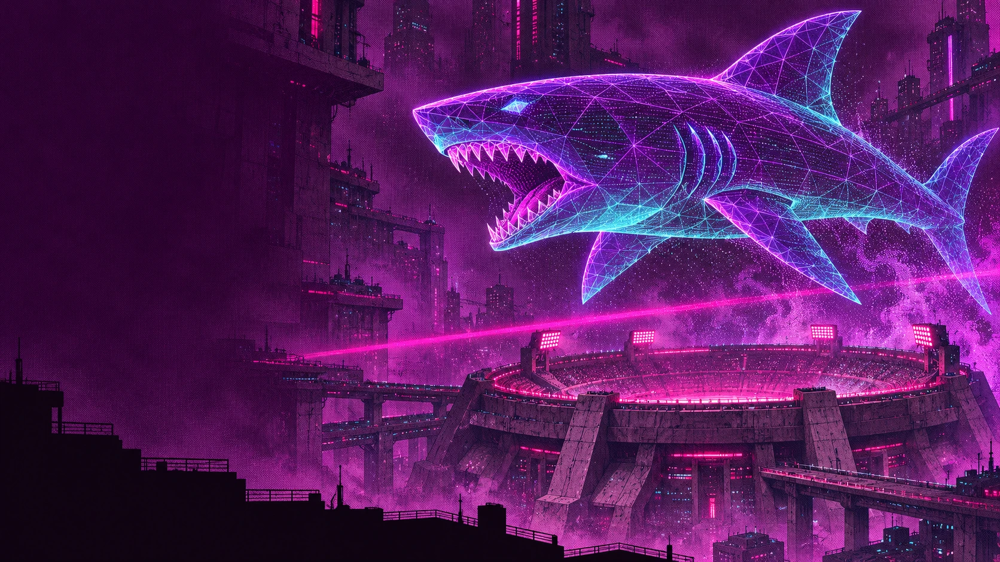
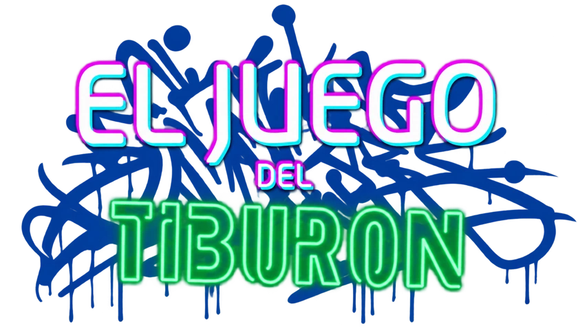
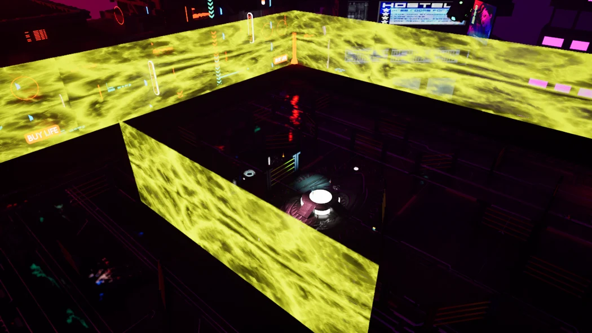
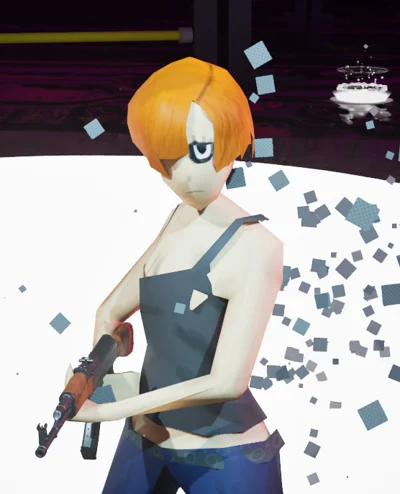
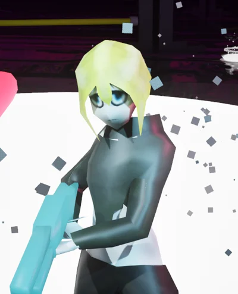
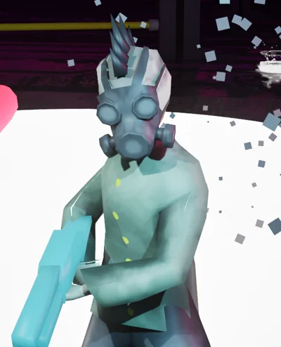
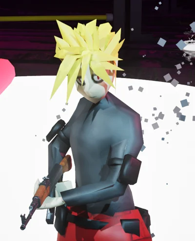

Estudio El Acuario presenta

Toda la ciudad está mirando. Arrebata la Marca y consérvala hasta que suene la última sirena.
El juego
Bienvenidos a
El Acuario.
En un futuro donde el combate se transmite como espectáculo, una arena se alza sobre la ciudad. Hasta cuatro concursantes recorren sus plataformas en busca de armas y de una sola Marca que todos pueden ver.
Un jugador crea la sala en la red local. Los demás la buscan, se unen y eligen a su concursante. Cuando todos han confirmado, se abre la arena.

Reglas de la arena
El último segundo
lo decide todo.
Un concursante recibe la Marca al azar. Un distintivo luminoso delata su posición y le concede 25 puntos adicionales de vida máxima. Si lo eliminas, la Marca pasa a tus manos.
Al agotarse el reloj, gana quien lleve la Marca. Si el portador cae al vacío o abandona, la Marca queda libre. Si nadie la recupera antes de la sirena, gana quien haya acumulado más puntos de combate.
Selección de personaje
Los concursantes.
Cuatro siluetas, una elección por jugador. Al confirmar tu personaje, queda reservado para ti durante la partida.




Equipo de combate
El arsenal.
Cardumen
RiflePresiona al portador desde el otro lado de la arena con disparos que alcanzan a un rival en la línea de tiro.
Mordida
EscopetaCambia de arma al cerrar la distancia. Cada cartucho libera tres perdigones que pueden impactar al mismo rival.
Botiquín
RecuperaciónBusca el corazón cuando estés herido. Recupera hasta 40 puntos de vida y vuelve a la pelea.
Aleta Dorada
MovilidadDurante diez segundos corres más rápido y saltas más alto. Úsala para alcanzar al portador o escapar con la Marca.
El estudio
Somos
El Acuario.
Somos cinco creadores detrás de El Juego del Tiburón. Diseñamos el escenario y sus concursantes, construimos las reglas de combate en Blueprints y probamos las partidas en red para que todos vean el mismo desenlace.
Equipo de desarrollo
- Nombre 1
- Nombre 2
- Nombre 3
- Nombre 4
- Nombre 5